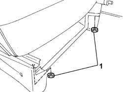
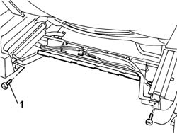
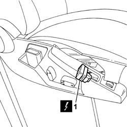
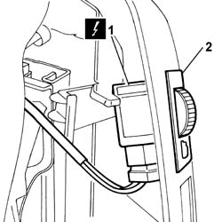
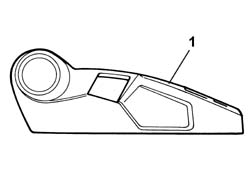

7045A44 SEAT INTERIOR GUARD - R R
- Path
- Procedures > 70 FITTINGS > 7045 FRONT SEATS > 7045A FRONT SEAT ASSEMBLY > 7045A44 SEAT INTERIOR GUARD - R R
- Kind
- repair procedure (removal / refitting; the operation number is the code)
- Applies to
- all engines; all production periods
- Interactive page
- https://sloeber94.github.io/elrnDB-fUlss/en/#/179007850
Applies to: all engines; all production periods
 Removing
Removing
 Refitting
Refitting- Raise the seat until it is in the end of travel position.
1. Undo the rear bolts fastening the front seat guides.

Applies to: all engines; all production periods
- Move the front seat backwards into the end of travel position.
1. Undo the front bolts fastening the front seat guides.

Applies to: all engines; all production periods
- Move the front seat forwards into the end of travel position.
- Using the special tool, release the seat cable loom from the retaining clip at the base of the seat mounting.
 | Description | Code | Function |
|---|---|---|---|
. | Knife | 1.878.077.000 | release the retaining clips at the base of the seat mounting. |
1. Disconnect the electrical connection for the seat memory switch.

Applies to: all engines; all production periods
- Release the wiring for the front driver's seat movement motors from the fastening clips.
1. Disconnect the electrical connection for the front seat heating system switch.
2. Remove the front seat heating system switch.

Applies to: all engines; all production periods
- Release the electrical connectors for the front seat movement motors from the fastening clips and disconnect the switch unit.
1. Remove the inner guard for one of the seats.

Applies to: all engines; all production periods
Refitting
Removing- Fit the inner guard for one of the seats.
- Fit the front seat heating system switch on the fastening clips.
- Connect the electrical connection for the front seat heating system switch.
- Fit the front driver's seat position memory unit.
- Connect the electrical connection for the memory unit.
- Fit the electrical connectors for the front driver's seat movement motors to the fastening clips.
- Connect the electrical connections for the driver's front seat movement motors.
- Fit the seat cable loom on the retaining clips at the base of the seat mounting.
- Tighten the rear bolts fixing the front seat guides to torque.
- Move the seat lengthwise until it is in the rear end of travel position.
- Tighten the front bolts fixing the front seat guides to torque.
- Place the seat in the correct driving position.
Topics that link to this page (6)
- 5580C44 FRONT SIDE BAG MODULE ONE LH OR RH R R
- 7045A34 MANUAL DEVICE FOR ADJUSTING SEAT HEIGHT - R R WITH SEAT REMOVED
- 7045A36 DRIVERS SEAT MANUAL HEIGHT ADJUSTMENT DEVICE - R R
- 7045D20 TRIM OF ONE FRONT SEAT CUSHION LH OR RH RR
- 7045D21 TRIM OF ONE FRONT SEAT LH OR RH RR WITH SEAT REMOVED
- 7045J10 SWITCH UNIT FOR MOVEMENT OF ONE FRONT SEAT, L/H OR R/H - R+R FOR CHECK